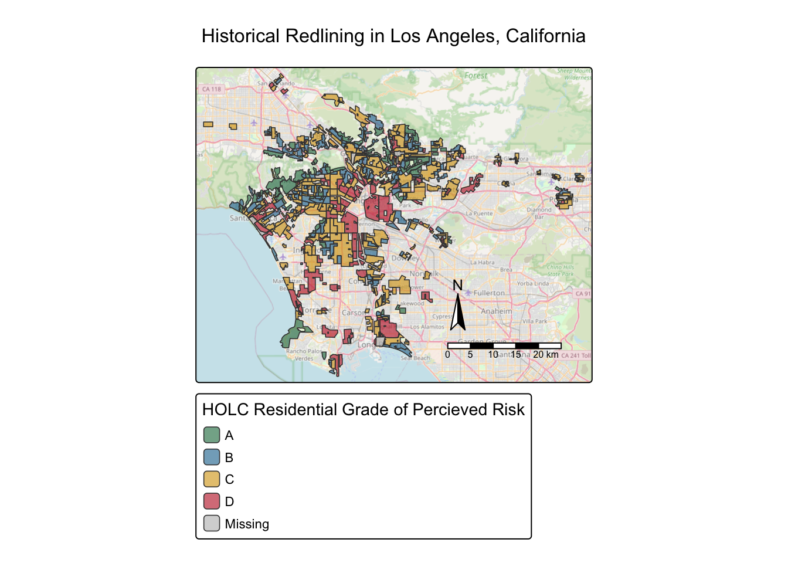
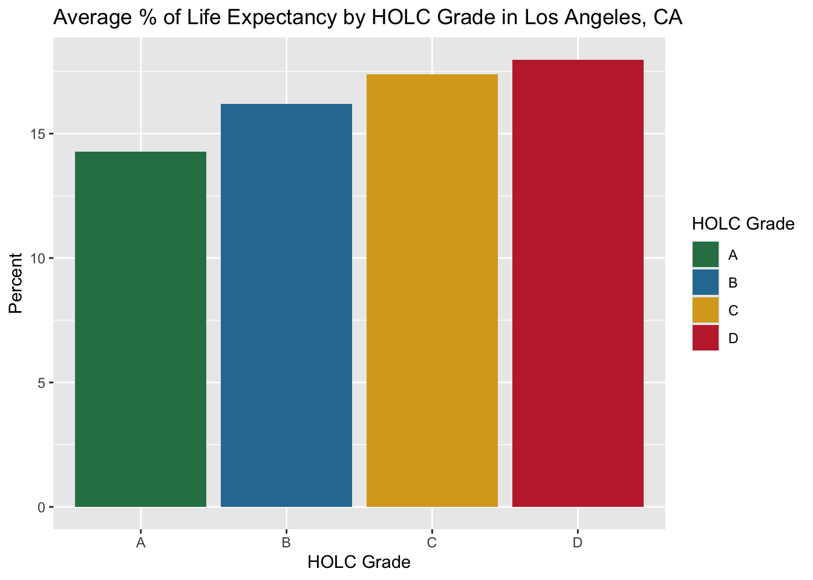
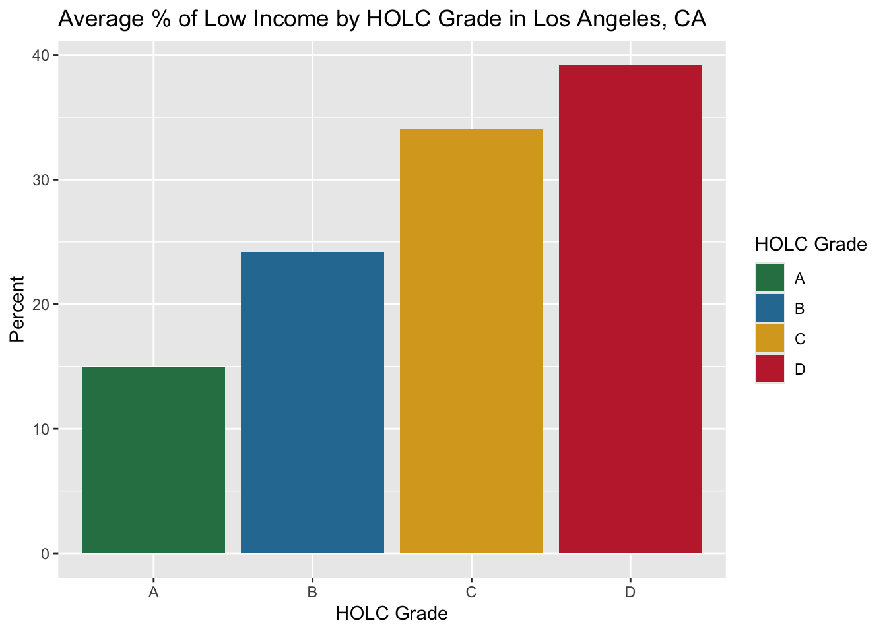
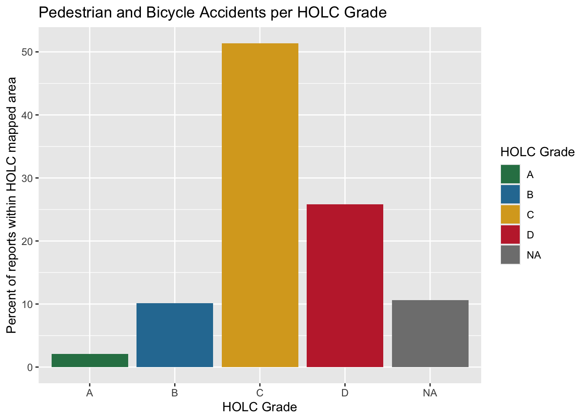

Background - A recent study found that redlining has not only affected the enviroments communities are exposed to, it has also shaped pedestrian saftey outcomes decades later. Analyzing over 52,000 pedestrians fatalities across 202 U.S. cities from 2010 - 2019, Taylor and co-authors found a clear pattern: as HOLC grades deteriorated from A (Best) to D (Hazardous), pedestrian fatality rates increased systematically. Census tracts graded “D” experienced 2.6 times the rate of pedestrian deaths compared to “A”-graded areas. These findings highlight the need for targeted pedestrian infrastructure investments in historically redlined neighborhoods to address longstanding safety disparities. more of this stude PMC
package 'sf' successfully unpacked and SHA256 sums checked
package 'gt' successfully unpacked and SHA256 sums checked
The downloaded binary packages are in
/var/folders/3w/31qy5rbx7q94q12cs1t5ph440000gn/T//Rtmposilwf/downloaded_packages
Part 1: Legacy of redlining in current enviormental (in)justice:
Explore the historical redlining in Los Angeles and its legacy on present-day enviromental justice
EJScreen
Copied from HW1: The data details fromm EJScreen in order to get LA County, CA
# reading the EJScreen dataejscreen <- sf::st_read(here::here("data/ejscreen/EJSCREEN_2023_BG_StatePct_with_AS_CNMI_GU_VI.gdb"))
Reading layer `EJSCREEN_StatePctiles_with_AS_CNMI_GU_VI' from data source
`/Users/amapolagarcia/Git/EDS223-HW2/data/ejscreen/EJSCREEN_2023_BG_StatePct_with_AS_CNMI_GU_VI.gdb'
using driver `OpenFileGDB'
Simple feature collection with 243021 features and 223 fields
Geometry type: MULTIPOLYGON
Dimension: XY
Bounding box: xmin: -19951910 ymin: -1617130 xmax: 16259830 ymax: 11554350
Projected CRS: WGS 84 / Pseudo-Mercator
# filter Californiacalifornia <- ejscreen |> dplyr::filter(ST_ABBREV =="CA")# filter to Los Angeles Countylos_angeles <- ejscreen |> dplyr::filter(CNTY_NAME %in%c("Los Angeles County"))
Bike and Pedestrian Crash Reports
# crashes data file# read csv with sf_st_read()#check to see if they have the same coordinate reference systemscrashes <-read_csv(here::here("data/SWITRS_LA/Crashes.csv")) |>as_tibble() |>drop_na(POINT_X) |>drop_na(POINT_Y) |>st_as_sf(coords =c("POINT_X", "POINT_Y"), crs =4326,remove=FALSE) |># Ser crs to 4326 so point calibrate to lat and ladst_transform(crs =st_crs(los_angeles)) # transform CRS to match EJScreen to LA dataset
HOLC Redlining
# holc data file#use sf::st_read() to read the Json file , Lab 1holc <- sf::st_read(here::here("data/mapping-inequality/mapping-inequality-los-angeles.json"))
Reading layer `mapping-inequality-los-angeles' from data source
`/Users/amapolagarcia/Git/EDS223-HW2/data/mapping-inequality/mapping-inequality-los-angeles.json'
using driver `GeoJSON'
Simple feature collection with 417 features and 14 fields
Geometry type: MULTIPOLYGON
Dimension: XY
Bounding box: xmin: -118.6104 ymin: 33.70563 xmax: -117.7028 ymax: 34.30388
Geodetic CRS: WGS 84
set the CRS for all dataset
# check CRS for each datasetst_crs(los_angeles)
Coordinate Reference System:
User input: WGS 84 / Pseudo-Mercator
wkt:
PROJCRS["WGS 84 / Pseudo-Mercator",
BASEGEOGCRS["WGS 84",
ENSEMBLE["World Geodetic System 1984 ensemble",
MEMBER["World Geodetic System 1984 (Transit)"],
MEMBER["World Geodetic System 1984 (G730)"],
MEMBER["World Geodetic System 1984 (G873)"],
MEMBER["World Geodetic System 1984 (G1150)"],
MEMBER["World Geodetic System 1984 (G1674)"],
MEMBER["World Geodetic System 1984 (G1762)"],
MEMBER["World Geodetic System 1984 (G2139)"],
MEMBER["World Geodetic System 1984 (G2296)"],
ELLIPSOID["WGS 84",6378137,298.257223563,
LENGTHUNIT["metre",1]],
ENSEMBLEACCURACY[2.0]],
PRIMEM["Greenwich",0,
ANGLEUNIT["degree",0.0174532925199433]],
ID["EPSG",4326]],
CONVERSION["Popular Visualisation Pseudo-Mercator",
METHOD["Popular Visualisation Pseudo Mercator",
ID["EPSG",1024]],
PARAMETER["Latitude of natural origin",0,
ANGLEUNIT["degree",0.0174532925199433],
ID["EPSG",8801]],
PARAMETER["Longitude of natural origin",0,
ANGLEUNIT["degree",0.0174532925199433],
ID["EPSG",8802]],
PARAMETER["False easting",0,
LENGTHUNIT["metre",1],
ID["EPSG",8806]],
PARAMETER["False northing",0,
LENGTHUNIT["metre",1],
ID["EPSG",8807]]],
CS[Cartesian,2],
AXIS["easting (X)",east,
ORDER[1],
LENGTHUNIT["metre",1]],
AXIS["northing (Y)",north,
ORDER[2],
LENGTHUNIT["metre",1]],
USAGE[
SCOPE["Web mapping and visualisation."],
AREA["World between 85.06°S and 85.06°N."],
BBOX[-85.06,-180,85.06,180]],
ID["EPSG",3857]]
Coordinate Reference System:
User input: WGS 84 / Pseudo-Mercator
wkt:
PROJCRS["WGS 84 / Pseudo-Mercator",
BASEGEOGCRS["WGS 84",
ENSEMBLE["World Geodetic System 1984 ensemble",
MEMBER["World Geodetic System 1984 (Transit)"],
MEMBER["World Geodetic System 1984 (G730)"],
MEMBER["World Geodetic System 1984 (G873)"],
MEMBER["World Geodetic System 1984 (G1150)"],
MEMBER["World Geodetic System 1984 (G1674)"],
MEMBER["World Geodetic System 1984 (G1762)"],
MEMBER["World Geodetic System 1984 (G2139)"],
MEMBER["World Geodetic System 1984 (G2296)"],
ELLIPSOID["WGS 84",6378137,298.257223563,
LENGTHUNIT["metre",1]],
ENSEMBLEACCURACY[2.0]],
PRIMEM["Greenwich",0,
ANGLEUNIT["degree",0.0174532925199433]],
ID["EPSG",4326]],
CONVERSION["Popular Visualisation Pseudo-Mercator",
METHOD["Popular Visualisation Pseudo Mercator",
ID["EPSG",1024]],
PARAMETER["Latitude of natural origin",0,
ANGLEUNIT["degree",0.0174532925199433],
ID["EPSG",8801]],
PARAMETER["Longitude of natural origin",0,
ANGLEUNIT["degree",0.0174532925199433],
ID["EPSG",8802]],
PARAMETER["False easting",0,
LENGTHUNIT["metre",1],
ID["EPSG",8806]],
PARAMETER["False northing",0,
LENGTHUNIT["metre",1],
ID["EPSG",8807]]],
CS[Cartesian,2],
AXIS["easting (X)",east,
ORDER[1],
LENGTHUNIT["metre",1]],
AXIS["northing (Y)",north,
ORDER[2],
LENGTHUNIT["metre",1]],
USAGE[
SCOPE["Web mapping and visualisation."],
AREA["World between 85.06°S and 85.06°N."],
BBOX[-85.06,-180,85.06,180]],
ID["EPSG",3857]]
WARNING messages to check CRS
#### RESUBMISSION ######### #Warning message to check if CRS of datasets matchif(st_crs(los_angeles) ==st_crs(holc)) {print("CRS matches")} else {warning("CRS mismatch: HOLC polygons need to be transformed.")}#WARNING message check to confirm crashes use the Los Angeles CRSif(st_crs(los_angeles) ==st_crs(crashes)) {print("CRS matches")} else {warning("CRS mismatch: Crash points need to be transformed")}
[1] "CRS matches"
Transform HOLC into the same CRS as EJScreen
Transfrom the holc dataset into the same crs as ejscreen dataset
#transform holc to match los_angeles crsholc <-st_transform(holc, crs =st_crs(los_angeles))# Keep reports marked as pedestrian or bicycle accidentsst_crs(los_angeles) ==st_crs(holc)
[1] TRUE
st_crs(los_angeles) ==st_crs(crashes)
[1] TRUE
Create a map of historical redlining neighborhoods, including:
For each of these cities, they produced maps showing those grades. Neighborhoods they deemed “best” and safe investments were given grades:
A > “Best”(A = green)
B > “” (B = blue)
C > “” (C = yellow)
D > “hazard” (D = red)
Palette for maps and graphs
#Pallette for grades of holc datasetsholc_palette <-c("A"="#2D7F54","B"="#2B7AA1","C"="#D9A723","D"="#C22B38","No HOLC Grade"="#D2D2D2","Missing"="#7E8A94")
#Set tmap mode to static plottingtmap_mode("plot")#Load a semi-transparent OpenStreetMap basemaptm_basemap("OpenStreetMap", alpha =0.6) +tm_shape(holc) +#define the historical HOLC spatial dataset as primary layer shape# Render the polygons using the historical grading attribute datatm_polygons(#size = 0.8,fill ="grade",title ="HOLC Residential Grade of Percieved Risk",palette = holc_palette,#transparency and outline configfill_alpha =0.65, #softens polyons fills to keep underlying streetscol ="grade", #Dynamic stylingL assigns border lines to the same color as the grade fillcol_alpha =1.0, # Adds gentle transparency to boundaries so shapes blend seamlesslylwd =0.8# thins the outline to keep dense ) +tm_title("Historical Redlining in Los Angeles, California") +tm_compass(position =c("bottom", "right")) +tm_scalebar(position =c("bottom", "right"))

Create a table summarizing: Census block groups that fall within each HOLC grade in Los Angeles,CA
# left join EJ Screen Los Angeles County dataset with Holc datasetjoin_ejscreen_holc <-st_join(los_angeles, holc)# Drop geometry to act as a tidyverse dataframeejscreen_holc <-st_drop_geometry(join_ejscreen_holc)#Summary table of percentage of census block groups that fall within each HOLC gradeejscreen_holc_percent <- ejscreen_holc |>mutate(grade =ifelse(is.na(grade), "No HOLC Grade", grade) ) |>count(grade) |>mutate(percent = (n /sum(n)) *100) |>select(-n) |>rename(Grade = grade, Percent = percent)gt(ejscreen_holc_percent) |>tab_header(title ='Percent of Census Block Groups Within Each HOLC grade in Los Angeles,CA')
Percent of Census Block Groups Within Each HOLC grade in Los Angeles,CA
Grade
Percent
A
4.99555
B
13.78505
C
34.02314
D
14.97552
No HOLC Grade
32.22074
Create at least two visualizations summarizing current conditions (from the EJScreen data) within HOLC grades using the mean of the following variables (you may combine variables in a single visualization or look at a single variable per plot)
[] % low-income
[] percentile for Particulate Matter 2.5
[] use ggplot for your visualization! You will first need to calculate mean of each variable grouped by HOLC grade.
#Percent of Low life Expectancy by Gradelife_exp_grade <- ejscreen_holc |>group_by(grade) |>drop_na(grade) |>summarise(life_exp =mean(LIFEEXPPCT, na.rm =TRUE)*100)gt(life_exp_grade)
grade
life_exp
A
14.27607
B
16.19266
C
17.38525
D
17.96768
Average % expectancy visualization
::: {.cell}
ggplot(life_exp_grade, mapping =aes(x = grade, y = life_exp, fill = grade)) +geom_col() +labs (title ="Average % of Life Expectancy by HOLC Grade in Los Angeles, CA",x ="HOLC Grade",y ="Percent",fill ="HOLC Grade" ) +scale_fill_manual(values = holc_palette)
::: {.cell-output-display}

::: :::
Average % Low Income by HOLC Grade in Los Angeles,CA
#Percent of Low income Households by gradelow_income_grade <- ejscreen_holc |>group_by(grade) |>drop_na(grade) |>summarise(low_income = (mean(LOWINCPCT)*100), na.rm =TRUE)gt(low_income_grade)
grade
low_income
na.rm
A
14.97511
TRUE
B
24.20120
TRUE
C
34.08981
TRUE
D
39.19059
TRUE
ggplot(low_income_grade, mapping =aes(x = grade, y = low_income, fill = grade)) +geom_col() +labs(title ="Average % of Low Income by HOLC Grade in Los Angeles, CA",x ='HOLC Grade',y ='Percent',fill ='HOLC Grade', ) +scale_fill_manual(values = holc_palette)

Write a brief paragraph reflecting on these results
[] Interpret the patterns you observe in your results
[] Discuss potential relationships between historical redlining grades and current environmental/socioeconomic conditions
Result Summary
Redlined neighborhoods refer to areas historically designated as high-risk for mortgage lending. This designation resulted from discriminatory policies that targeted residents based on; race, ethnicity, or socioeconomic status/. Such inequitable practices contributed to enviromental injustice, as redlined neighborhoods frequently experienced disproportionate enviromental challenges. These neighborhoods faced greater enviromental burdens, as shown by EJScreen data on low life expectancy and the prevalence of low-incomme households. The data indicate that households in hazardous neighborhoods. The data indicates that households in this “red zone” are classified as ‘GRADE D’ exhibit a higher percentage of low-income households at 39.19 % and a higher proportion of residents with low life expectancy percentage of (17.97).By comparison, Grade A neighborhoods, which were seen as the best for lending and investment, had the lowest share of low-income households at 14.98%. The lower life expectancy in redlined neighborhoods may be due to several environmental factors including closer proximity to toxic waste sites, higher levels of pollution, along with less protection from environmental contaminants.Thus, the effects of redlining still cause differences in health and income in these communities til this day.
Part 2: Legacy of redlining in pedestrian and bike accidents:
#RESUBMISSION############## Filter for bike and pedestrian crashesselect_crashes <- crashes |>filter( PEDESTRIAN_ACCIDENT =="Y"| BICYCLE_ACCIDENT =="Y" ) |>select(#then look at the difference between NAs between Point_x/Point_y and Long/lat POINT_X, POINT_Y, PEDESTRIAN_ACCIDENT, BICYCLE_ACCIDENT )#WARNING MESSAGE: in case final crash and HOLC polygons still have different crs valuesif (st_crs(select_crashes) ==st_crs(holc)) {print("CRS check passed.")} else {stop("The crash data and HOLC map need the same CRS before joining.")}
[1] "CRS check passed."
#Now check to see how many crash reports do not intersect with any HOLC polygonsholc_match <-st_intersects(select_crashes,holc)unmatched_reports <-sum(length(holc_match) ==0)#then join crash points to HOLC polygons and keep only intersecting reportscrashes_in_holc <-st_join( select_crashes, holc |>select(grade),join = st_intersects,left =FALSE ) |>st_drop_geometry()#count accidents reports in each HOLC gradeaccidents_by_grade <- crashes_in_holc |>count(grade) |>#calculate each grade percent of reports matched to HOLC polygonsmutate(percent = n /sum(n) *100)#this will prepare the percentage tablecrashes_holc_percent <- accidents_by_grade |>select(-n) |>#this will remove the n column after calculating the percentagesrename(grade = grade,percent = percent, )#visualize the tablegt(crashes_holc_percent) |>tab_header(title ='Percent of Pedestrian and Bicycle Accidents Reports by HOLC Grade')
Percent of Pedestrian and Bicycle Accidents Reports by HOLC Grade
grade
percent
A
2.048947
B
10.142288
C
51.371656
D
25.793967
NA
10.643142
Let’s visualize it
#Graph of pedestrian and Bicycle accident per HOLC grade in Los Angeles,CAggplot(accidents_by_grade, aes(x = grade, y = percent, fill = grade)) +geom_col() +scale_fill_manual(values = holc_palette) +labs(title ="Pedestrian and Bicycle Accidents per HOLC Grade",x ='HOLC Grade',y ='Percent of reports within HOLC mapped area',fill ='HOLC Grade' )

Result Summary
The graph above shows that neighborhoods with a ‘GRADE C’ with a 27% and ‘GRADE D’ with a 14% had higher percentages of pedestrians/bike accidents while those in ‘GRADE A’ and ‘GRADE B’ had lower percentages of 1.0% and 6%. Thus, these results suggest that these neighborhoods labeled hazardous or declining may have underlying conditions that make pedestrians/ bike accidents more likley to happen. Things like poor maintained public roads, sidewalks, and bicycle lanes infrastructures may be a contributing factor.